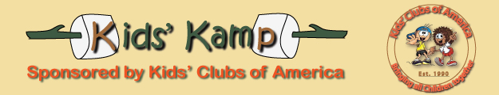

Kids Kamp Summer 2014
|
June Opening The Kansas City Kids' Klub opens their summer Kids' Kamp June 23rd. This year, Kids' Kamp will have three different offerings this summer. |
|
Tots -- Day Camp Tots must be in either first or second grade. Camp runs from 7:30 a.m. to 4:30 p.m. For an additional fee, a bus will pick up kids at traditional school bus routes. Students can attend the daily camp for one, two, or three weeks. Activities will vary each week. Activities include field trips to zoos, museums, and outdoor nature preserves. Junior Kids -- All week Junior kids are pre-teen in age from 9 to 11. These are week long from Sunday to Saturday at the Bridger Kids' Camp Grounds on Lake Jacomo. Campers must be at the camp ground by noon on Sunday, June 29 and must be picked up Saturday, July 5th by 2 p.m. A second round for this age group will occur in late July. Young Adults Camp -- All week The Young Adults are teens from 13 to 16 years of age. The camp will run from Sunday, July 6 to Saturday, July 12 and again from Sunday, August 3 to Saturday, August 9. |
|
Wanted Kids' Klub will be hiring camp counselors for summer work. For the Tots and Junior kids, counselors must be at least 16 years old and have good academic standing with their high school. Young Adult counselor should be completing their second year of college, preferrebly with a major in secondary education. In addition to counselors, the camps need certified life guards. |